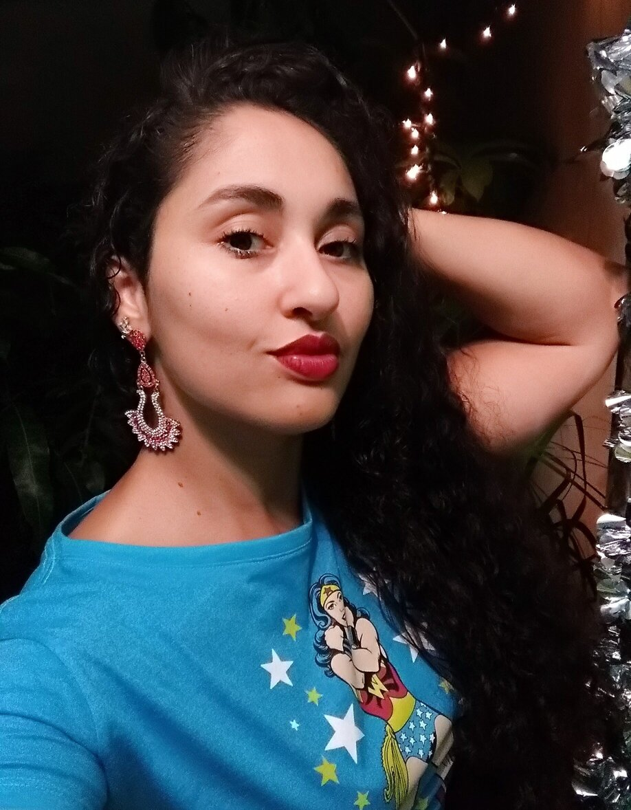

Но нет! Мне не под силу это, меня подавляет величие этих явлений. Душа моя озарена неземной радостью, как эти чудесные весенние утра, которыми я наслаждаюсь от всего сердца. Я совсем один и блаженствую в здешнем краю, словно созданном для таких, как я. Я так счастлив, мой друг, так упоен ощущением покоя, что искусство мое страдает от этого. Ни одного штриха не мог бы я сделать, а никогда не был таким большим художником, как в эти минуты.